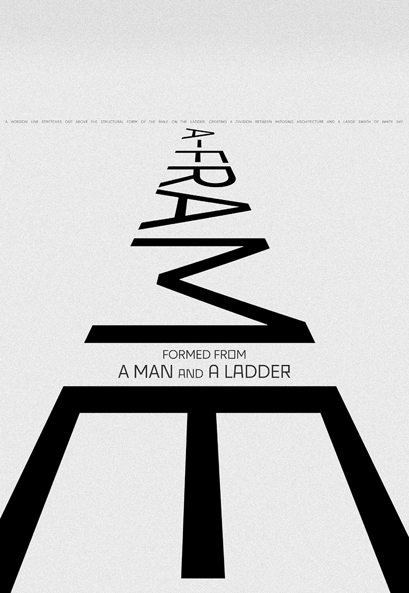

BLACK_LINES_

● INTRODUCTION
Likewise, Rodchenko’s use of light to intensify relationships between forms in sculptures as well as his play with textures in paintings such as Non-Objective Painting no. 80 (Black on Black) (1918; fig. 3) are equally evident in his photographs, such as Girl with a Leica (Devushka s Leikoi) (1932–33; fig. 4).7 The tactic of employing oblique, high, and low angles in his photographs (as in the Dive pictures) reflects the diagonal arrangements of some of his paintings, while his collapsing of the space and flattening of the objects also makes the compositional process closer to that utilized in painting. (as in the Dive pictures) reflects the diagonal arrangements of some of his paintings, while his collapsing of the space and flattening of the objects also makes the compositional process closer to that utilized in painting. and flattening of the objects also makes the compositional process closer to that utilized in painting. Likewise, Rodchenko' use of the light Likewise, Rodchenko's use of the light Likewise, Rodchenko's use of the light Likewise,
Likewise, Rodchenko’s
use of light to intensify relationships between forms in
sculptures as well as his play with textures in paintings such
as Non-Objective Painting no. 80 (Black on Black) (1918; fig.
3) are equally evident in his photographs, such as Girl with
The tactic of
employing oblique, high, and low angles in his photographs
(as in the Dive pictures) reflects the diagonal arrangements
of some of his paintings, while his collapsing of the space
and flattening of the objects also makes the compositional
process closer to that utilized in painting.
(as in the Dive pictures) reflects the diagonal arrangements
of some of his paintings, while his collapsing of the space
and flattening of the objects also makes the compositional
process closer to that utilized in painting.
